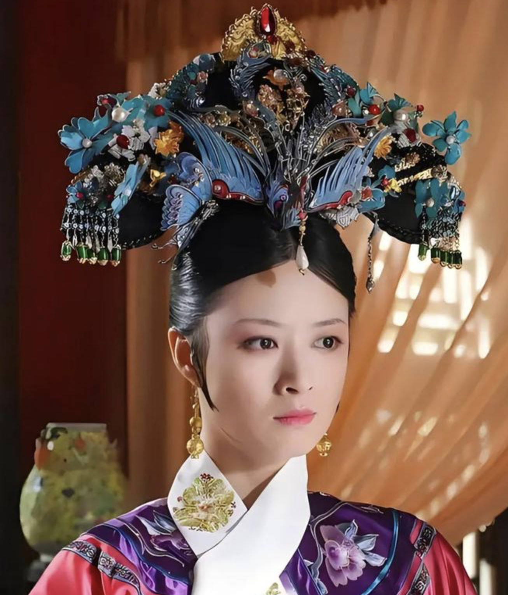
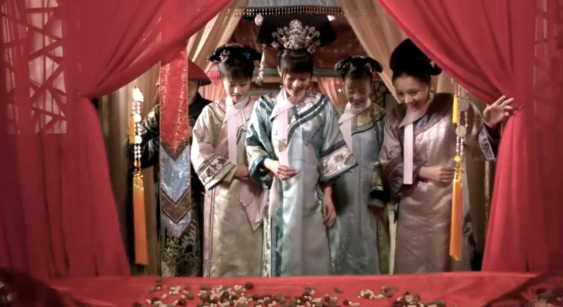
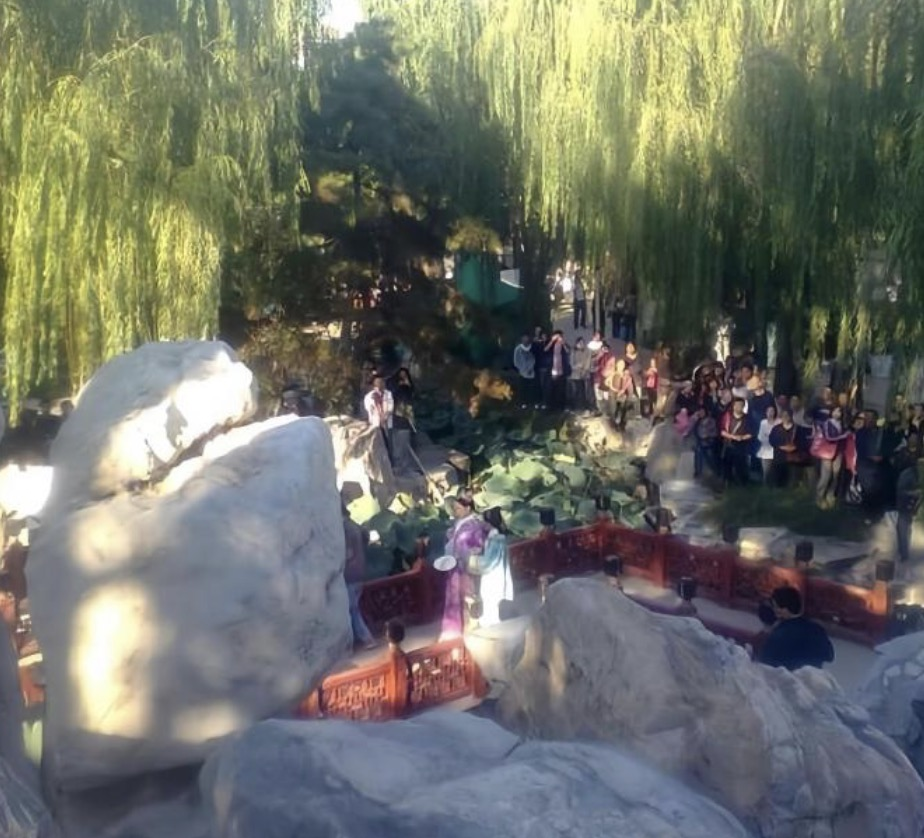
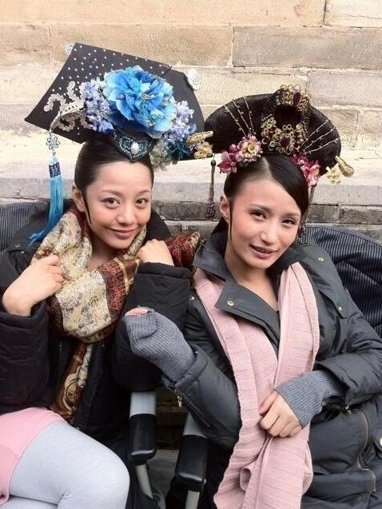

幕后故事
《甄嬛传》的拍摄过程充满了挑战与创新。剧组在服装、道具、场景等方面都力求完美，为观众呈现了一个真实而华丽的清朝宫廷。

头饰制作
每一件头饰都经过精心制作，完美还原清朝宫廷的奢华。
头饰细节
头饰上的每一颗珍珠、每一片金箔都经过精心挑选和制作。

宠妃造型
华妃的造型设计展现了其尊贵的身份和独特的个性。

圆明园取景
在圆明园取景，展现了清朝皇家园林的恢宏气势。
拍摄花絮
《甄嬛传》的拍摄过程充满了欢乐与挑战。演员们不仅要演绎复杂的角色，还要适应繁重的拍摄任务。
拍摄现场
演员们在拍摄现场认真对戏，力求完美呈现每一个镜头。

演员休息
在紧张的拍摄之余，演员们也会放松心情，享受拍摄的乐趣。
化妆间
化妆师们为演员打造精致的妆容，展现角色的独特魅力。
道具准备
道具组精心准备每一件道具，确保拍摄的每一个细节都完美无缺。
场景布置
场景设计师们精心布置每一个场景，营造出真实的清朝宫廷氛围。
导演指导
导演郑晓龙在现场指导演员表演，确保每一个镜头都达到最佳效果。